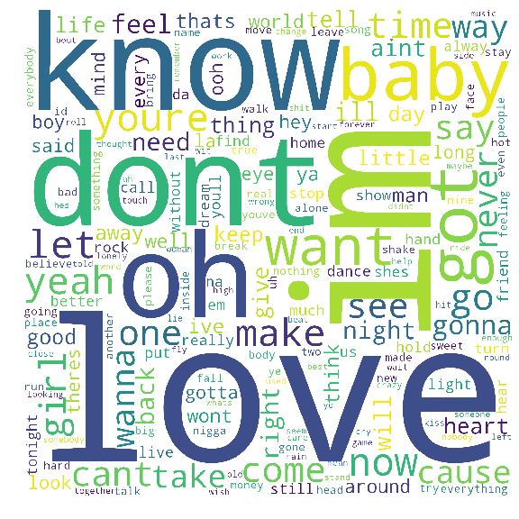

Summary: Billboard Analysis
 The purpose of this project was to answer some questions that I had when
I first found the dataset. These were what I was setting out to answer:
- Who is the top Artist that has been on the Top Billboard 100 the most?
- Who has been in the Top Billboard 100 more than 10 times?
- What are the most common words used among all these songs? The Top Artists? How about in each decade?
To accomplish this, I used pandas for the analysis and WordCloud for the plotting.
WordCloud allowed me to run the word counts and plot them based on how much the word
was used and then plot it in an image on a scale based on the word count value. This
site has the source data as well as a chart on who were the top artists (being on the Billboard 100 more than
10 times) and the WordClouds for all artists, the top artists, and WordClouds from each decade. Enjoy!